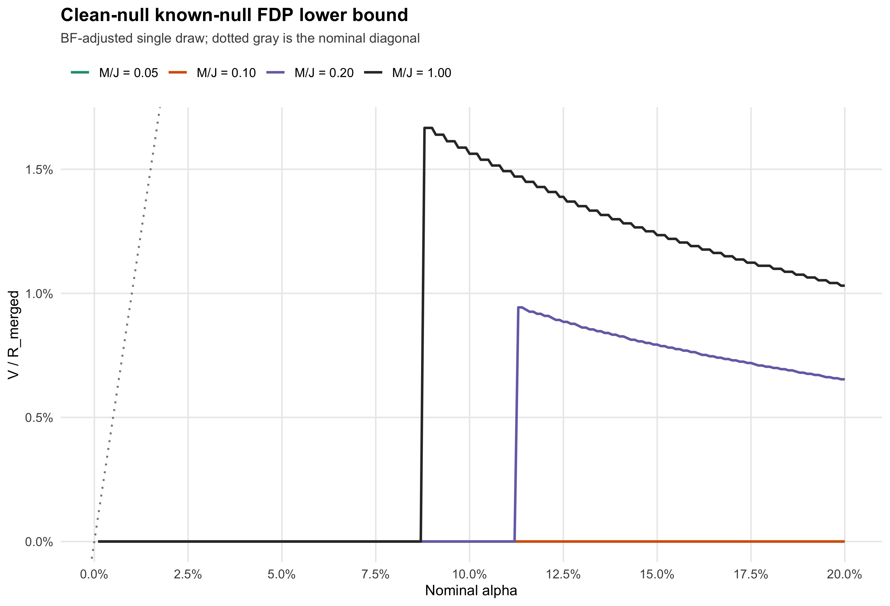
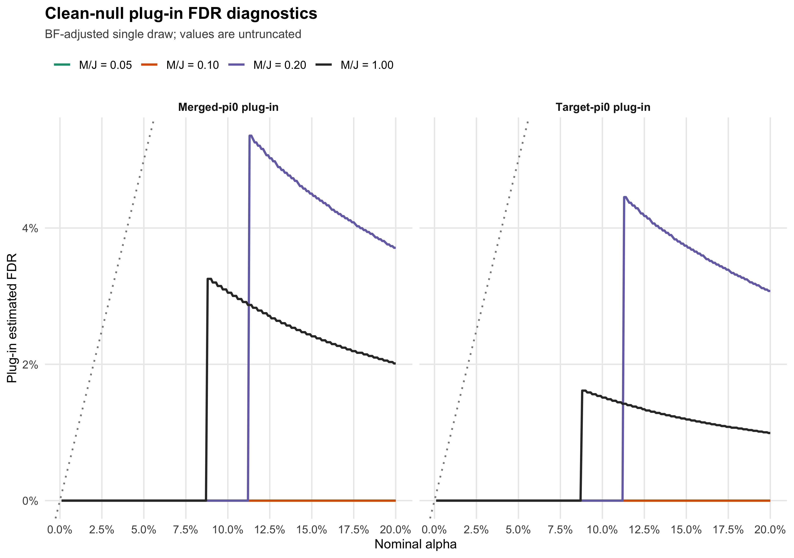
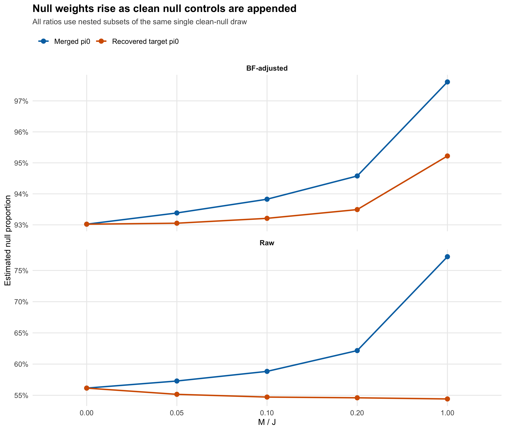

Last updated: 2026-08-19
Checks: 6 1
Knit directory: coderepo-local/
This reproducible R Markdown analysis was created with workflowr (version 1.7.2). The Checks tab describes the reproducibility checks that were applied when the results were created. The Past versions tab lists the development history.
The R Markdown is untracked by Git. To know which version of the R
Markdown file created these results, you’ll want to first commit it to
the Git repo. If you’re still working on the analysis, you can ignore
this warning. When you’re finished, you can run
wflow_publish to commit the R Markdown file and build the
HTML.
Great job! The global environment was empty. Objects defined in the global environment can affect the analysis in your R Markdown file in unknown ways. For reproduciblity it’s best to always run the code in an empty environment.
The command set.seed(20251109) was run prior to running
the code in the R Markdown file. Setting a seed ensures that any results
that rely on randomness, e.g. subsampling or permutations, are
reproducible.
Great job! Recording the operating system, R version, and package versions is critical for reproducibility.
Nice! There were no cached chunks for this analysis, so you can be confident that you successfully produced the results during this run.
Great job! Using relative paths to the files within your workflowr project makes it easier to run your code on other machines.
Great! You are using Git for version control. Tracking code development and connecting the code version to the results is critical for reproducibility.
The results in this page were generated with repository version c87957a. See the Past versions tab to see a history of the changes made to the R Markdown and HTML files.
Note that you need to be careful to ensure that all relevant files for
the analysis have been committed to Git prior to generating the results
(you can use wflow_publish or
wflow_git_commit). workflowr only checks the R Markdown
file, but you know if there are other scripts or data files that it
depends on. Below is the status of the Git repository when the results
were generated:
Ignored files:
Ignored: .DS_Store
Ignored: .Rhistory
Ignored: .Rproj.user/
Ignored: Rplots.pdf
Ignored: analysis/.DS_Store
Ignored: analysis/.Rhistory
Ignored: analysis/site_libs/
Ignored: code/.DS_Store
Ignored: code/.Rhistory
Ignored: code/revision_simulations/.DS_Store
Ignored: data/appendixB/
Ignored: data/dynamic_eQTL_real/
Ignored: data/revision_simulations/
Ignored: data/toy_example/
Ignored: output/dynamic_eQTL_real/
Ignored: output/pdf/
Ignored: output/playwright/
Ignored: output/revision_simulations/
Untracked files:
Untracked: analysis/revision_internal_fash_cl_manuscript_impact.rmd
Untracked: analysis/revision_internal_fash_discovery_variant_count.rmd
Untracked: analysis/revision_internal_fash_linear_real_data_ablation.rmd
Untracked: analysis/revision_internal_fashr_correlated_observation_model.rmd
Untracked: analysis/revision_internal_r1_normality_assumption.rmd
Untracked: analysis/revision_internal_small_m_clean_working_null_sensitivity.rmd
Untracked: analysis/revision_internal_small_m_matched_null_eb_sensitivity.rmd
Untracked: analysis/revision_internal_twenty_variant_per_gene_refit.rmd
Untracked: apps/
Untracked: code/revision_simulations/internal/covariance_estimation/run_design_propagated_null_correlation.R
Untracked: code/revision_simulations/internal/covariance_estimation/run_multigene_null_beta_covariance_exploration.R
Untracked: code/revision_simulations/internal/early_window_sensitivity/
Untracked: code/revision_simulations/internal/evaluation_grid_sensitivity/
Untracked: code/revision_simulations/internal/fash_cl_manuscript_impact/
Untracked: code/revision_simulations/internal/fash_discovery_variant_count/
Untracked: code/revision_simulations/internal/fash_linear_real_data_ablation/
Untracked: code/revision_simulations/internal/r1_known_truth_genotype_permutation/
Untracked: code/revision_simulations/internal/r1_normality_assumption/
Untracked: code/revision_simulations/internal/selected_signal_genotype_permutation/
Untracked: code/revision_simulations/r5_one_variant_per_gene/
Untracked: code/revision_simulations/shared/build_real_genotype_one_per_gene_cache.R
Untracked: code/revision_simulations/shared/real_genotype_one_per_gene.R
Untracked: code/revision_simulations/shared/test_linear_mixture_fash.R
Untracked: code/revision_simulations/shared/test_real_genotype_one_per_gene.R
Untracked: code/revision_simulations/shared/validate_r1_r2_linear_mixture_pairing.R
Untracked: code/revision_simulations/shared/validate_r1_r2_real_genotype_pairing.R
Unstaged changes:
Modified: analysis/dynamic_eQTL_real.rmd
Modified: analysis/index.Rmd
Modified: analysis/revision_balanced_variant_thinning.rmd
Modified: analysis/revision_combined_spiky_genotype_simulation.rmd
Modified: analysis/revision_functional_testing_simulation.rmd
Modified: analysis/revision_genotype_level_simulation.rmd
Modified: code/revision_simulations/README.md
Modified: code/revision_simulations/internal/covariance_estimation/run_global_pca_factor_visualization.R
Modified: code/revision_simulations/r1_random_bspline/reporting.R
Modified: code/revision_simulations/r1_random_bspline/run_random_bspline_mc_replication.R
Modified: code/revision_simulations/r2_spiky_transient/reporting.R
Modified: code/revision_simulations/r2_spiky_transient/run_combined_spiky_genotype_simulation.R
Modified: code/revision_simulations/r2_spiky_transient/run_spiky_transient_mc_replication.R
Modified: code/revision_simulations/r3_functional_testing/reporting.R
Modified: code/revision_simulations/r3_functional_testing/run_matched_functional_testing_mc_replication.R
Modified: code/revision_simulations/shared/simulation_functions.R
Note that any generated files, e.g. HTML, png, CSS, etc., are not included in this status report because it is ok for generated content to have uncommitted changes.
There are no past versions. Publish this analysis with
wflow_publish() to start tracking its development.
The preceding small-\(M\) analysis used synchronized signal-stripped residual permutations. This benchmark instead generates exact null observations under the diagonal Gaussian working likelihood:
\[ \widehat\beta_{jt}^{(0)} = s_{jt} Z_{jt}, \qquad Z_{jt}\overset{\mathrm{iid}}{\sim}N(0,1). \]
BF_update() are re-estimated for every merged universe; all
lfdr values come from that universe-specific fit.
The validated likelihood construction plus the resumed downstream fit took 188.7 seconds in total. The likelihood construction itself took 185.0 seconds.
render_clean_table(
clean_bf_alpha005_table,
align = "rrrrrrrrrrr"
)| M / J | M | Merged pi0 | Recovered target pi0 | Target calls | V | R merged | V / R merged | V / M | Target-pi0 plug-in FDR | Merged-pi0 plug-in FDR |
|---|---|---|---|---|---|---|---|---|---|---|
| 0.05 | 318 | 0.934 | 0.931 | 75 | 0 | 75 | 0.00% | 0.000% | 0.0% | 0.0% |
| 0.10 | 636 | 0.938 | 0.932 | 72 | 0 | 72 | 0.00% | 0.000% | 0.0% | 0.0% |
| 0.20 | 1,272 | 0.946 | 0.935 | 68 | 0 | 68 | 0.00% | 0.000% | 0.0% | 0.0% |
| 1.00 | 6,362 | 0.976 | 0.952 | 46 | 0 | 46 | 0.00% | 0.000% | 0.0% | 0.0% |
At nominal (), no clean working-model null was selected by the BF-adjusted procedure at any tested (M/J). Therefore (V/R_{}), (V/M), and both plug-in FDR diagnostics are exactly zero for this one draw.
This zero is retained without a continuity correction. It does not establish that the corresponding probability is exactly zero; it says that the observed single-draw count is zero.
The synchronized-residual entries below are the earlier median [IQR] across 20 nested subsets of one fixed residual-permutation pool. The clean-null entries are single-draw values and therefore have no interval.
render_clean_table(
clean_residual_comparison_table,
align = "rrrr"
)| M / J | Clean-null V | Clean-null V / R merged | Synchronized-residual V / R merged |
|---|---|---|---|
| 0.05 | 0 | 0.00% | 2.55% [1.32%, 4.47%] |
| 0.10 | 0 | 0.00% | 5.26% [3.20%, 7.41%] |
| 0.20 | 0 | 0.00% | 11.11% [9.35%, 12.37%] |
| 1.00 | 0 | 0.00% | 40.21% |
The contrast is large: the full synchronized-residual benchmark had \(V/R_{\mathrm{merged}}=40.21\%\), whereas the clean working-model null draw has zero selected BF-adjusted controls. Thus the severe synchronized-residual result is not reproduced when the appended controls follow the fitted diagonal Gaussian working model exactly.
render_clean_table(
clean_raw_alpha005_table,
align = "rrrrrrrrrrr"
)| M / J | M | Merged pi0 | Recovered target pi0 | Target calls | V | R merged | V / R merged | V / M | Target-pi0 plug-in FDR | Merged-pi0 plug-in FDR |
|---|---|---|---|---|---|---|---|---|---|---|
| 0.05 | 318 | 0.573 | 0.552 | 251 | 0 | 251 | 0.00% | 0.000% | 0.0% | 0.0% |
| 0.10 | 636 | 0.588 | 0.547 | 240 | 0 | 240 | 0.00% | 0.000% | 0.0% | 0.0% |
| 0.20 | 1,272 | 0.622 | 0.546 | 221 | 2 | 223 | 0.90% | 0.157% | 2.5% | 3.3% |
| 1.00 | 6,362 | 0.772 | 0.544 | 142 | 3 | 145 | 2.07% | 0.047% | 1.1% | 3.2% |
The raw procedure does select clean null controls: two at \(M/J=0.20\) and three at \(M/J=1.00\). Their known-null FDP lower bounds are 0.90% and 2.07%, respectively. This confirms that the simulated rows enter the selection and counting pipeline normally; the BF-adjusted zero is not a hard-coded or denominator artifact.
plot_clean_known_null_fdp()
BF-adjusted single-draw known-null FDP lower bound V/R_merged versus nominal alpha for directly simulated working-model null controls.
If every appended unit is a valid known null, \(V/R_{\mathrm{merged}}\) is a lower bound on the merged FDP because false target discoveries are not counted in \(V\).
The plug-in diagnostics remain distinct from the direct lower bound:
\[ \widehat{\mathrm{FDR}}_T = \widehat\pi_{0,T} \frac{V/M}{R_T/J}, \qquad \widehat{\mathrm{FDR}}_{\mathrm{merged}} = \widehat\pi_{0,\mathrm{merged}} \frac{V/M}{R_{\mathrm{merged}}/(J+M)}. \]
plot_clean_plugin_fdr()
BF-adjusted target-pi0 and merged-pi0 plug-in FDR diagnostics for one clean working-model null draw.
The formulas use \(V/M\) to estimate a null selection probability. The directly counted discovery-set fraction remains \(V/R_{\mathrm{merged}}\).
plot_clean_pi0()
Raw and BF-adjusted merged and recovered-target null-proportion estimates after appending nested clean working-model null controls.
For the BF-adjusted fit, merged \(\widehat\pi_0\) rises from 0.930 in the target-only reference to 0.934, 0.938, 0.946, and 0.976 as \(M/J\) increases. The recovered target estimate is comparatively stable, moving from 0.930 to 0.931, 0.932, 0.935, and 0.952. Target calls decrease from 75 at \(M/J=0.05\) to 46 at \(M/J=1.00\), showing that even valid clean null controls affect the re-estimated EB procedure when appended in large numbers.
The simulated null z-scores have overall mean -0.0002, overall SD 0.9970, and mean off-diagonal time correlation -0.0007. The mean absolute off-diagonal correlation is 0.0094. All 12 numerical validation checks passed with zero genuine FASH warnings.
From the workflowr repository root:
Rscript --vanilla code/revision_simulations/internal/selected_signal_genotype_permutation/test_small_m_clean_working_null_helpers.R
Rscript --vanilla code/revision_simulations/internal/selected_signal_genotype_permutation/run_small_m_clean_working_null_sensitivity.R
Rscript --vanilla -e 'workflowr::wflow_build("analysis/revision_internal_small_m_clean_working_null_sensitivity.rmd")'The run used the existing target likelihood cache but computed every clean-null likelihood row from the simulated effect estimates and retained SE vectors. It did not reuse residual-permutation null likelihood rows.
sessionInfo()R version 4.5.1 (2025-06-13)
Platform: aarch64-apple-darwin20
Running under: macOS Sequoia 15.6.1
Matrix products: default
BLAS: /System/Library/Frameworks/Accelerate.framework/Versions/A/Frameworks/vecLib.framework/Versions/A/libBLAS.dylib
LAPACK: /Library/Frameworks/R.framework/Versions/4.5-arm64/Resources/lib/libRlapack.dylib; LAPACK version 3.12.1
locale:
[1] C.UTF-8/C.UTF-8/C.UTF-8/C/C.UTF-8/C.UTF-8
time zone: America/Chicago
tzcode source: internal
attached base packages:
[1] stats graphics grDevices utils datasets methods base
other attached packages:
[1] workflowr_1.7.2
loaded via a namespace (and not attached):
[1] gtable_0.3.6 jsonlite_2.0.0 dplyr_1.1.4 compiler_4.5.1
[5] promises_1.5.0 tidyselect_1.2.1 Rcpp_1.1.1-1.1 stringr_1.6.0
[9] git2r_0.36.2 dichromat_2.0-0.1 callr_3.7.6 later_1.4.4
[13] jquerylib_0.1.4 scales_1.4.0 yaml_2.3.12 fastmap_1.2.0
[17] ggplot2_4.0.1 R6_2.6.1 labeling_0.4.3 generics_0.1.4
[21] knitr_1.50 tibble_3.3.0 rprojroot_2.1.1 RColorBrewer_1.1-3
[25] bslib_0.9.0 pillar_1.11.1 rlang_1.2.0 cachem_1.1.0
[29] stringi_1.8.7 httpuv_1.6.16 xfun_0.55 S7_0.2.1
[33] getPass_0.2-4 fs_1.6.6 sass_0.4.10 otel_0.2.0
[37] cli_3.6.6 withr_3.0.2 magrittr_2.0.5 ps_1.9.1
[41] grid_4.5.1 digest_0.6.39 processx_3.8.6 rstudioapi_0.17.1
[45] lifecycle_1.0.5 vctrs_0.7.3 evaluate_1.0.5 glue_1.8.1
[49] farver_2.1.2 whisker_0.4.1 rmarkdown_2.30 httr_1.4.7
[53] tools_4.5.1 pkgconfig_2.0.3 htmltools_0.5.9